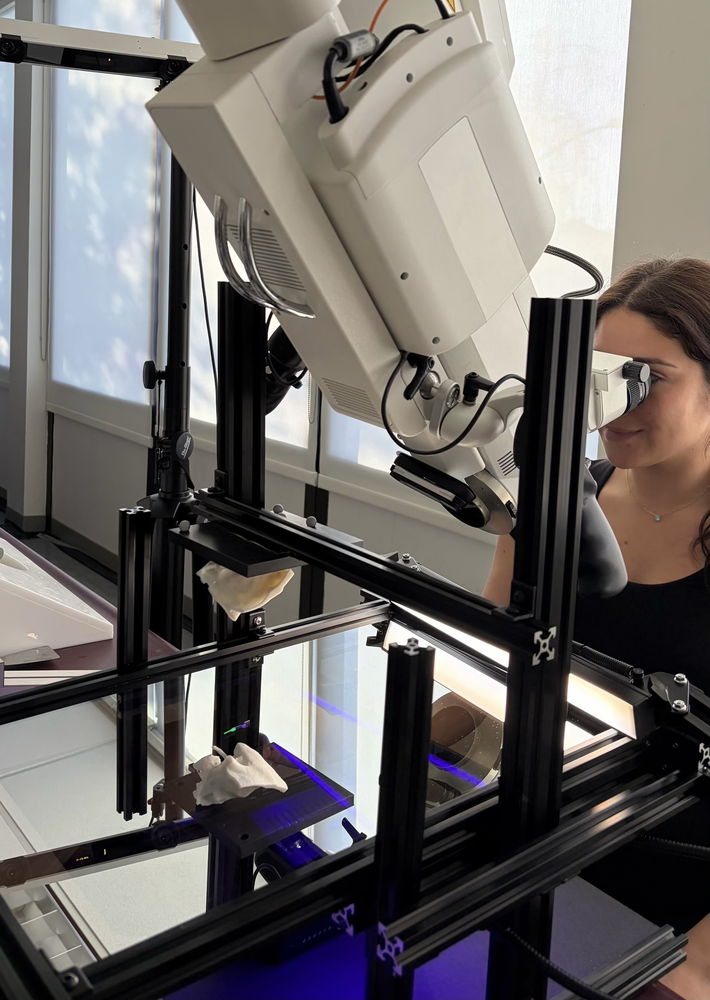

Visualization techniques for revealing subsurface anatomical structures in augmented microscopy. (a) Original microscope view of the 3D-printed temporal bone model. (b) Opaque rendering of segmented anatomical structures augmented onto the bone surface. (c) Opaque rendering with a surface-conforming virtual aperture that reveals the subsurface structures through a localized opening. (d) Alpha blending visualization that partially reveals the underlying anatomy while preserving contextual surface cues.
Abstract
The ability to see through the surface of the human body is central to medical augmented reality (AR) applications ranging from surgical planning to intraoperative guidance. However, accurately perceiving the depth of virtual structures relative to real anatomy remains a persistent challenge. This is particularly pronounced under the operating microscope, where high magnification, limited viewpoints, and tight error tolerances make depth and occlusion both essential and difficult to infer. Prior work has proposed methods for visualizing subsurface content using Video See-Through (VST) and Optical See-Through (OST) head-mounted displays (HMDs). However, the implementation of these approaches in surgical microscopes remains an open question due to the unique microscope perceptual conditions as well as the additive characteristics of microscope optics and display systems. To the best of our knowledge, this work is the first to investigate the perceptual accuracy of AR microscope visualization techniques for depicting virtual content inside the human body. We introduce a custom depth perception measurement apparatus based on a half-silvered mirror that enables alignment between a real measurement probe and subsurface virtual targets while viewing through a stereoscopic surgical microscope. We then implement a custom alpha blending method and a virtual aperture that conforms to the three-dimensional surface geometry. Using our apparatus, we conducted a 3 x 2 within-subjects user study evaluating depth estimation accuracy and confidence across visualization techniques. Results showed that both the virtual aperture and alpha blending significantly reduced absolute depth error compared to standard opaque rendering. Alpha blending without an aperture achieved localization accuracy comparable to opaque rendering with a virtual aperture while eliminating the systematic depth underestimation bias observed in traditional renderings. Furthermore, the presence of a virtual aperture increased users' confidence and was preferred over other methods. These findings provide insights for the design of AR visualization systems for microsurgical applications.
Depth Perception Measurement
Measurement Apparatus

Measurement apparatus. Experimental setup showing the surgical stereoscopic microscope viewing the reflection of the 3D-printed temporal bone through a half-silvered mirror. The bone is rigidly mounted above the mirror so that its reflection appears at a realistic working depth relative to the microscope. Participants manipulate an optically tracked measurement probe beneath the mirror to align its tip with target locations inside the reflected bone. External illumination is used to independently light the bone and probe while avoiding glare from the microscope optics. Through the microscope, participants simultaneously observe the reflected bone and the probe tip, allowing them to position the probe as if pointing to subsurface anatomical targets.
Visualization Conditions

Visualization conditions evaluated across the three anatomical structures. Each block corresponds to one structure: sigmoid sinus (top), inner ear (middle), and facial nerve (bottom). Columns show the Rendering Method factor (Opaque, Transparent, and Alpha Blending), and rows show the Aperture factor: without hole (top) and with hole (bottom).
Measurement Task

Measurement probe and example task views. (a) OptiTrack measurement probe with a fluorescent-painted tip illuminated by a purple ultraviolet light to increase visibility through the microscope. (b) Microscope view of the reflected temporal bone with the probe tip aligned to a target location. (c) Example alignment trial with an opaque rendering of the virtual anatomical structure. (d) Same trial with the surface-conforming aperture enabled. In all conditions, the probe tip was rendered on top of the virtual structures and aperture to avoid introducing additional occlusion cues that could influence depth perception.
Results

Depth error results. Box plots of (a) Absolute depth error and (b) Signed depth error across the six AR visualization conditions. O=Opaque, T=Transparent, B=Blending, H=Hole, α=alpha.

Baseline versus AR conditions. Bar plots of mean absolute depth error across all conditions. Baseline trials were analyzed separately as a benchmark and were not included in the main factorial models. O=Opaque, T=Transparent, B=Blending, H=Hole, α=alpha.

Task completion time across AR visualization conditions. O=Opaque, T=Transparent, B=Blending, H=Hole, α=alpha.
BibTeX
@article{
title = {Seeing Through the Surface: Evaluating Visualization Techniques for Depth Perception in Augmented Microscopy},
author = {El Chemaly, Trishia and Niu, Wally and Fan, Yunxin and Wu, Yuxuan and Fu, Fanrui and Leuze, Christoph and Hargreaves, Brian and Daniel, Bruce and Blevins, Nikolas},
journal = {IEEE Transactions on Visualization and Computer Graphics},
year = {2026}
}